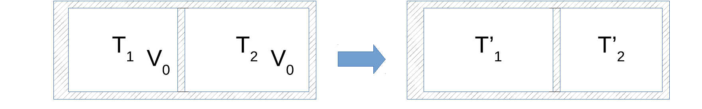

2025年度期末試験
長さ $l$ のゴムを準静的に微小長さ $dl$ だけ引っ張るときのゴムにされる微小仕事 $δW$ は、張力を $X$ として、$δW=Xdl$ と表される。 ここで考えるゴムの張力 $X$ は温度 $T$ と長さ $l$ の関数として次の状態方程式に従う：
ただし、$A$、$l_0$ は正の定数として、ゴムの長さ $l$ は $l>l_0$ を満たすとする。また、長さ一定の条件での熱容量 $C_l$ は温度に依存しない定数とする。エントロピーを $S$、内部エネルギーを $U$ として、以下の問いに答えよ。
この問題全体は、気体の $(P,V)$ 系における $\{$内部エネルギー・エントロピー・自由エネルギー・熱容量$\}$ の議論を、ゴムの $(X,l)$ 系にそのまま置き換えたものになっている。対応関係は $$-P \longleftrightarrow X,\qquad V\longleftrightarrow l,\qquad δW=-PdV\longleftrightarrow δW=Xdl$$ であり、気体の断熱曲線・Carnotサイクル・$C_P-C_V$ の議論などがすべて同じ論法で $C_X - C_l$、$X$–$l$ 面のサイクルへと横滑りする。以下の各設問で「気体だったらどうだったか」を思い出しながら読むと見通しがよい。
熱力学関係式を $dU = \Box\,dS + \Box\,dl$ と表すとき、空欄を答えよ。
熱力学第一法則 $dU=δQ+δW$ と、可逆変化における第二法則の表現 $δQ=TdS$、および与えられた微小仕事 $δW=Xdl$ を組み合わせるだけでよい。
気体の $dU=TdS-PdV$ と全く同じ構造で、$-P$ の代わりに「引っ張ると仕事をされる」ことを反映して $+X$ が来ている（気体は膨張すると仕事をする側、ゴムは引っ張られると仕事をされる側、という符号の違いに対応）。
Helmholtz自由エネルギー $F(T,l)$ から導かれるMaxwell関係式を答えよ。
Legendre変換 $F=U-TS$ の微小変化を計算する。
したがって $F(T,l)$ を独立変数 $T,l$ の関数とみて比較すると
$F$ は状態量なので偏微分の順序を交換してよく（$\dfrac{\partial^2F}{\partial T\partial l}=\dfrac{\partial^2F}{\partial l\partial T}$）、
これがMaxwell関係式である。状態方程式に代入すると、右辺に使う形として
が(4)以降で繰り返し使う具体形になる。
熱容量 $C_l$ と内部エネルギー $U$ との関係を答えよ。
$U(T,l)$ の全微分を書き、そこから $δQ$ を取り出す。
第一法則 $δQ=dU-δW=dU-Xdl$ に代入すると
長さ一定（$dl=0$）の条件での熱容量 $C_l$ は、定義よりこの式の $dT$ 係数そのもの：
このゴムの内部エネルギーは $l$ に依存せずに、温度のみに依存することを示せ。
示すべきは $\pd{U}{l}{T}=0$。(1)の関係式 $dU=TdS+Xdl$ を $l$ で偏微分する（$T$ 一定）と、いわゆる「エネルギー方程式」が得られる：
ここに(2)のMaxwell関係式 $\pd{S}{l}{T}=-\pd{X}{T}{l}$ を代入すると
状態方程式より $\pd{X}{T}{l}=A\left(\dfrac{l}{l_0}-\left(\dfrac{l_0}{l}\right)^2\right)=\dfrac{X}{T}$（$X=AT(\cdots)$ の形から、$T$ で割ると $T$ が落ちることに注意）。したがって
ゆえに $U=U(T)$（$l$ に依存しない）。この結果は理想気体の $\pd{U}{V}{T}=0$ と全く同じ構造で成り立っており、原因も同じ：状態方程式が「$X/T$ が $T$ によらない」という形（理想気体なら $P/T=nR/V$ が $T$ によらない形）をしているために、エネルギー方程式の右辺がきれいに打ち消し合う。
張力一定の条件での熱容量を $C_X$ とすると、$C_l$ との関係を示せ。また、$C_l$ と $C_X$ のどちらが大きいかを理由とともに説明せよ。
(3)で導いた $δQ=\pd{U}{T}{l}dT+\left[\pd{U}{l}{T}-X\right]dl$ に、(4)の結果 $\pd{U}{l}{T}=0$ を使うと、この系では
という非常に簡単な形になる。張力 $X$ 一定の条件で温度を $dT$ だけ変えたときの熱容量 $C_X$ は、この式を $X$ 一定のもとで $dT$ で割ればよい：
$\pd{l}{T}{X}$ を状態方程式から求める。$X=AT\!\left(\dfrac{l}{l_0}-\left(\dfrac{l_0}{l}\right)^2\right)$ を $X$ 一定のまま $T$ について解くと $T=\dfrac{X}{A\left(\frac{l}{l_0}-\left(\frac{l_0}{l}\right)^2\right)}$ で、これを $l$ で微分すると
逆数をとって $\pd{l}{T}{X}=1\big/\pd{T}{l}{X}<0$ も同じ符号（負）になる。したがって
より厳密には $-X\pd{l}{T}{X}>0$（$X>0$ かつ $\pd{l}{T}{X}<0$ だから）。ゆえに
気体の $C_P\ge C_V$ と全く同じ構造の不等式である。気体では「圧一定で温めると膨張し、その膨張のぶん余分に外へ仕事をする分だけ多く熱を要する」と説明されるが、ここでは符号が入れ替わっており「張力一定で温めるとゴムは縮む（(11)参照）が、それでも $C_X\ge C_l$ は成り立つ」という、単純な体積膨張の直感だけでは説明しきれない、より一般的な熱力学的安定性に由来する不等式であることが分かる。
このゴムを温度 $T_1$ に保ちながら、ゆっくりと長さ $l_1$ から $l_2>l_1$ に変化させるとき（準静的等温過程）にゴムに与えられる熱 $Q_{1\to2}$ を求めよ。
(5)で得た $δQ=C_ldT-Xdl$ を、等温（$dT=0$）の条件で積分すればよい。
これを整理する。
$l_1,l_2>l_0$ なので $\dfrac{l_1+l_2}{2l_0}>1>\dfrac{l_0^2}{l_1l_2}$（後者は $l_1,l_2>l_0$ より $1$ 未満）となり、中括弧の中身は正。また $l_2-l_1>0$。よって $Q_{1\to2}<0$：
等温でゴムを引っ張る過程は発熱過程である。実際にゴムを急に伸ばすと少し温かくなる、という日常的な体感（輪ゴムを引っ張って唇に当てると温かい）の準静的版に対応する。
前問の過程でエントロピーは増えるか減るかを理由とともに答えよ。
(2)のMaxwell関係式の具体形を使う。
等温（$T$ 一定）のまま $l$ を増やす（$dl>0$）と、この式より $dS<0$。したがってエントロピーは減少する。
物理的には、ゴムはミクロには絡み合った高分子鎖の集合であり、そのエントロピーの大部分は「鎖がどれだけ多くの丸まり方（配置）を取れるか」に由来する（気体の体積エントロピーとは起源が違う、いわゆるエントロピー弾性）。引っ張って鎖を伸ばすと、鎖が取りうる配置の数（丸まり方の自由度）が減るため、配置エントロピーが減少する——これが(6)で見た「等温で伸ばすと発熱する」ことの分子論的な理由でもある（$T\,dS<0$ の分だけ熱を系外に捨てないと等温を保てない）。
このゴムの断熱曲線を求め、断熱過程でゴムを伸ばすときの温度の増減を答えよ。
断熱条件 $δQ=0$ を(5)の $δQ=C_ldT-Xdl$ に課すと
変数分離形なので両辺を積分する。
すなわち
指数の中身 $f(l)=\dfrac{l^2}{2l_0}+\dfrac{l_0^2}{l}$ を $l$ で微分すると $f'(l)=\dfrac{l}{l_0}-\dfrac{l_0^2}{l^2}$ で、$l>l_0$ では $\dfrac{l}{l_0}>1>\dfrac{l_0^2}{l^2}$ なので $f'(l)>0$。つまり $l$ を大きくすると指数が単調に増加し、$T$ も単調に増加する。
断熱的にゴムを伸ばすと温度は上がる。これは(6)(7)の結果（等温で伸ばすと発熱・エントロピー減少）と表裏一体で、断熱（熱を逃がせない）なら、その代わりに系内の温度が上がってエントロピー一定を保つ、という関係になっている。
このゴムでCarnotサイクルを作るときのサイクルの様子を $T-S$ 平面で図示し、熱効率を答えよ。ただし、答えのみでよい。
(7)(8)で見たように、断熱（かつ準静的＝可逆）な変化は必ずエントロピー一定（$S=$一定）の変化になる。したがって、高温 $T_1$・低温 $T_2$ の2つの等温過程（$T$–$S$ 平面上で水平線）と、それらをつなぐ2本の断熱過程（$S=$一定の垂直線）からなるサイクルは、気体の場合と全く同じ「長方形」になる。
Carnotの定理（動作物質によらず、2つの温度 $T_1>T_2$ の間で働く可逆熱機関の効率はすべて等しい）はこのゴムのサイクルにも変わらず適用できるので、効率は気体のCarnotサイクルと同じ普遍公式
で与えられる（この結果は動作物質の具体的な状態方程式 $X(T,l)$ の中身に一切依存しない——それがCarnotの定理の主張そのものである）。
ゴムのCarnotサイクルを $X-l$ 平面に図示せよ。ただし、吸熱過程、発熱過程を明記し、サイクルの方向も示すこと。
気体の $P$–$V$ Carnotサイクルでは「高温での等温膨張が吸熱」「低温での等温圧縮が放熱」だが、このゴムでは(6)(7)で見た通り事情が逆転する：
したがって熱機関として正味の仕事を取り出すサイクル（高温で吸熱・低温で放熱、の順）を組むには：高温 $T_1$ で縮めて吸熱→断熱的にさらに縮めながら温度を $T_2$ まで下げる→低温 $T_2$ で伸ばして放熱→断熱的に伸ばしながら温度を $T_1$ まで戻す、という順にサイクルを回す必要がある。
この「気体とは逆回り」になる理由は、ゴムの弾性がエントロピー弾性（(7)の補足参照）であり、$\pd{S}{l}{T}<0$（気体の $\pd{S}{V}{T}=\pd{P}{T}{V}>0$ と符号が逆）だからである。$X$ を「圧力」、$l$ を「体積」に見立てたとき、この符号の反転がサイクルの回転方向をそのまま反転させる。
張力一定の条件で、温度を上昇するとゴムは伸びるか縮むかを理由とともに答えよ。
問うているのは $\pd{l}{T}{X}$ の符号。(5)の計算で既に
を示した。すなわち $X$ 一定のまま $T$ を上げると $l$ は減少する——輪ゴムに一定のおもりをぶら下げたまま加熱すると、輪ゴムは伸びるのではなく縮んでおもりを持ち上げる、という現象になる。
「荷重をかけたゴムを温めると縮む」という現象は、実際のゴムでも観測される現象でGough–Joule効果として知られる（1805年 J. Gough、1859年 J.P. Joule）。通常の金属棒などの固体は温めると膨張する（熱膨張率が正）のに対し、ゴムはミクロには絡み合った高分子鎖の集合体であり、そのエントロピーの大部分は鎖の丸まり方（コンフォメーション）の場合の数に由来する。鎖を引き伸ばすと配置エントロピーが下がるため、伸びたゴムは「エントロピーを増やそう（＝丸まろう）とする」方向に常に張力を持つ——これが（気体の圧力のような「エネルギー的な」斥力ではなく）エントロピー弾性と呼ばれる所以である。本問の状態方程式 $X\propto T$（$T$ に比例）という形自体が、まさにこのエントロピー弾性の特徴（張力が温度に比例し、エネルギーではなくエントロピーに由来する）を表現しており、通常のGough–Joule効果の議論のように追加の実験事実に頼らずとも、与えられた状態方程式だけから(5)(11)の結果が直接導かれる、という点が本問の面白いところである。
ある気体は体積一定の条件で温度を下げると、エントロピーは減少した。このことは一般の気体について成り立つかどうかを理由とともに説明せよ。また、エントロピー増大則に反しないかどうかを説明せよ。
体積一定でのエントロピーの温度依存性は、定積熱容量 $C_V$ を使って
と表される（$δQ=TdS=C_VdT$（定積）より）。熱的な安定性条件（第4章で学ぶ、揺らぎのない平衡状態が実現するための条件）から $C_V>0$ は任意の物質で常に要求される。したがって $T>0$ である限り $\pd{S}{T}{V}>0$ はすべての気体（というより、あらゆる安定な物質）で普遍的に成り立つ。ゆえに、体積一定で温度を下げれば（$dT<0$）必ず $dS<0$——これは特殊な気体の性質ではなく、熱力学的安定性そのものの帰結である。
エントロピー増大則（$\Delta S\ge0$）は、断熱的に孤立した系が不可逆過程を経るときに限って主張される法則である。本問の気体は「体積一定で温度を下げる」＝外部の低温熱源に熱を捨てながら冷える過程であり、系は熱的に孤立していない（外部と熱のやりとりをしている）。したがって、この気体（系）単独のエントロピーが減っても、エントロピー増大則には全く抵触しない。実際には、気体が失った熱を受け取る側の熱源（周囲）のエントロピーが、気体の減少分以上に増加しており、気体＋熱源を合わせた孤立系全体ではエントロピーの合計は減少しない（可逆的に準静的に冷やしたのであれば等号、不可逆に急冷したのであれば真に増加）。
理想気体の入っているピストンに温度 $T$ の熱源を接触して、準静的等温過程で体積を膨張させた。理想気体の内部エネルギーは体積に依存しないため、温度が一定なら不変である。この等温膨張過程では、熱源から熱をもらってそのまま外に仕事に変換している。これは熱力学第二法則に反しないかどうかを説明せよ。
熱力学第二法則のKelvin（トムソン）の原理は、正確には次のように述べられる：「一つの熱源から熱を受け取り、それを全部仕事に変える以外に何の変化も残さないようなサイクル（循環過程）は存在しない」。
本問の等温膨張は、確かに $\Delta U=0$ より受け取った熱 $Q$ をそっくりそのまま仕事 $W=Q$ として取り出している。しかし、これはサイクルではない——気体の体積は $V_A$ から $V_B(>V_A)$ へ変化し、圧力も下がっており、始めの状態には戻っていない。「何の変化も残さない」という条件が満たされていないので、Kelvinの原理はこの過程には何の制約も課さない。
もしこの気体を再び元の状態（体積 $V_A$）に戻そうとすれば、外部から圧縮の仕事を加える必要があり、しかも等温で圧縮する限り、その圧縮に要する仕事はちょうど膨張で得た仕事と等しくなる（等温可逆過程は経路に依らずエネルギー収支が対称）。つまり、これを1サイクルとして繰り返しても正味の仕事は取り出せず、熱を仕事に変換し続ける永久機関（第二種永久機関）にはならない。ゆえに矛盾は生じない。
理想気体の真空への断熱自由膨張は不可逆過程であることを示せ。
真空への自由膨張では、外部に何も押し返すものがないので仕事はゼロ（$δW=0$）。また容器全体を断熱壁で囲めば熱の出入りもない（$δQ=0$）。第一法則より $\Delta U=0$。理想気体は $U=U(T)$（体積に依存しない）ので、$\Delta U=0$ は $\Delta T=0$（温度不変）を意味する。
一方、エントロピーは状態量なので、始状態 $(T,V_a)$ と終状態 $(T,V_b)$ を結ぶ別の（可逆な）経路——例えば同じ $T,V_a\to V_b$ を結ぶ準静的等温膨張——に沿って計算してよい。この経路では
さて、もし自由膨張が可逆過程だったとすれば、断熱（$δQ=0$）かつ可逆な過程は定義から $dS=δQ_{\text{rev}}/T=0$、つまり等エントロピー過程のはずである。しかし実際には $\Delta S=nR\ln(V_b/V_a)>0\neq0$ が成り立ってしまう——これは「断熱かつ可逆」という仮定と矛盾する。
したがって、真空への断熱自由膨張は不可逆過程でなければならない。□
この設問は、「断熱過程（$δQ=0$）」と「等エントロピー過程（$dS=0$）」を安易に同一視してはいけない、という典型的な注意喚起になっている。両者が一致するのは断熱かつ可逆な場合に限られる。断熱だが不可逆な過程（自由膨張、断熱自由膨張、摩擦を伴う断熱変化など）では、$δQ=0$ であっても $dS>0$ となるのが一般的であり、これはむしろ「不可逆な断熱過程ではエントロピーが増加する」というエントロピー増大則そのものの典型例になっている。
ある気体について、体積 $V$ と内部エネルギー $U$ の関数として、完全な熱力学関数であるエントロピー $S(U,V)$ が次のように与えられる。
ここで、$N$ は物質量、$C$、$a$、$b$、$k$ は正の定数である。
熱力学関係式を $dS=\Box\,dU+\Box\,dV$ と表すとき、空欄を答えよ。
完全な熱力学関数 $S(U,V)$ の全微分は、定義から $dS=\dfrac1T dU+\dfrac PT dV$ となる（$\dfrac1T=\pd{S}{U}{V}$、$\dfrac PT=\pd{S}{V}{U}$ が $T,P$ の定義）。与式を $U$ で偏微分すると
（第2項 $Nk\ln(V-Nb)$ は $U$ を含まないので消える）。よって
この $U=CT-N^2a/V$ の関係が、以降の設問すべての土台になる。
この気体の状態方程式を求めよ。
今度は $S$ を $V$ で偏微分する。
第1項の分母 $U+N^2a/V=CT$（(1)の結果）を使うと、第1項 $=-\dfrac{CN^2a/V^2}{CT}=-\dfrac{N^2a}{TV^2}$。したがって
両辺に $T$ を掛けると状態方程式が得られる：
この状態方程式は、分子の大きさによる体積の排除（$V\to V-Nb$）と、分子間引力による圧力の減少（$-N^2a/V^2$ の項）を取り入れたファンデルワールス方程式そのものである（通常 $Nk$ の部分は理想気体の $nR$ に対応し、$a,b$ がそれぞれ分子間引力・排除体積に関する定数）。次の(3)以降の設問は、実質的に「ファンデルワールス気体の熱容量」「ファンデルワールス気体の断熱変化」「ファンデルワールス気体のJoule膨張」を順に問うものになっている。
この気体の熱容量を求めよ。定積熱容量でも定圧熱容量でもどちらでもよい。
(1)で $U=CT-\dfrac{N^2a}{V}$ を得た。定積熱容量は定義から
すなわち、問題文中に定数として与えられていた文字 $C$ は、実はそのまま定積熱容量に等しい（$V$ にも $T$ にもよらない定数）。理想気体と同様、このファンデルワールス気体も $C_V$ 自体は理想気体のときと変わらず一定のままである、というのがよく知られたファンデルワールス気体の性質。
体積 $V_a$，温度 $T_a$ の平衡状態にある気体を断熱壁で囲ったまま体積を $V_b(>V_a)$ へゆっくりと膨張させる。最終状態の温度を $T_b$ とする。$T_a/T_b$ を求めよ。また、この操作によるエントロピー変化を答えよ。
「ゆっくりと」＝準静的、かつ断熱壁で囲われている＝断熱、なので、この過程は可逆断熱＝等エントロピー過程である。$S=C\ln(U+N^2a/V)+Nk\ln(V-Nb)$ に $U+N^2a/V=CT$（(1)）を代入すると
これが変化前後で等しい（$\Delta S=0$）という条件を課す。
$V_b>V_a$ なので右辺の底は $1$ より大きく、指数 $Nk/C>0$ なので $T_a/T_b>1$、つまり $T_a>T_b$——断熱膨張で気体は冷える（理想気体の断熱膨張と同様の振る舞い）。エントロピー変化は、可逆断熱過程の定義よりそのまま $\Delta S=0$。
体積 $V_a$，温度 $T_a$ の平衡状態にある気体を真空へ断熱膨張をさせて、体積が $V_c>V_a$ になったときの温度を $T_c$ とすると、$T_a/T_c$ を求めよ。また、この操作によるエントロピー変化を答えよ。
真空への自由膨張なので $δW=0$（押し返すものがない）、断熱壁で囲まれているので $δQ=0$。ゆえに $\Delta U=0$：$U(T_a,V_a)=U(T_c,V_c)$。(1)の $U=CT-N^2a/V$ を使うと
$V_c>V_a$ より $T_c
エントロピー変化は、$S$ が状態量であることを使い、(4)と同じ表式 $S=C\ln T+Nk\ln(V-Nb)+\text{const}$ に始状態・終状態を代入するだけでよい（実際の不可逆経路に沿って積分する必要はない）：
第1項は $T_c
下図のように断熱壁に囲まれた箱を可動な仕切板で二つの部分に分けた。最初、二つの部分は同じ体積 $V_0$ であり、それぞれの部分に同じ物質量の気体をいれ、仕切板を固定して温度をそれぞれ $T_1$ と $T_2$ の平衡状態とした（$T_1>T_2$）。その後、仕切板を可動できるようにすると仕切板はどちらに移動するかを理由とともに答えよ。仕切板も断熱壁であるとする。

仕切板は断熱壁でもあるので、両側の気体は直接熱をやり取りできない。仕切板の運動を決めるのは、両側の気体が仕切板に及ぼす圧力の差である（仕切板自身は質量を無視できる・摩擦もないとすれば、正味の力を受けた瞬間に加速するので、力学的なつり合い——圧力が等しくなる状態——に向かって動く）。
(2)で求めた状態方程式 $P=\dfrac{NkT}{V-Nb}-\dfrac{N^2a}{V^2}$ を、両側とも同じ $N,V=V_0$ の初期状態に適用すると、
が常に成り立つ（$V>Nb$ が物理的に意味のある領域なので分母は正）。つまり、同じ体積・同じ物質量であれば、温度が高いほど圧力も高い。したがって最初の時点で $T_1>T_2$ であることから、左側（$T_1$）の圧力 $P_1$ の方が右側（$T_2$）の圧力 $P_2$ より高い（$P_1>P_2$）。
圧力の高い側が仕切板を押すので、仕切板は圧力の低い側＝低温側（$T_2$側）に向かって移動する。すなわち高温側の気体が膨張し、低温側の気体が圧縮されながら、最終的に両側の圧力が等しくなったところ（力学的平衡）で仕切板は静止する。
この設問で問われている「どちらに動くか」という方向は、上記の圧力比較だけで明快に答えられる。しかし、この系が最終的にどんな平衡状態に落ち着くか（最終的な $T_1',T_2',V_1',V_2'$ がどうなるか）を完全に決定しようとすると、実は古典熱力学だけでは足りない、というやや踏み込んだ事実が知られている。これは断熱ピストン問題（adiabatic piston problem）と呼ばれる有名な問題で、仕切板が断熱的かつ両側と熱交換をしないという設定では、力学的平衡（圧力が等しい）に達した後も、統計力学的なゆらぎ（仕切板の熱運動を介したエネルギーのやり取り）を通じてさらにゆっくりと温度差が解消していく——という、通常の熱力学の範囲を超えた（分子論的な時間スケールに関わる）議論が必要になることが Callen や Lieb らによって指摘されている。本問はその入口にあたる「向きだけを問う」設問になっている。
講義および試験に関して、良かった点、悪かった点等の感想を自由に述べよ。また、講義あるいは自習を通じて、物理学・熱力学から学んだことを述べよ。
この設問は採点対象の知識問題ではなく、受講者自身の感想・学びを問う自由記述式の設問であるため、模範解答は存在しない。